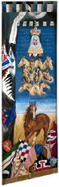
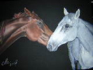
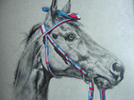
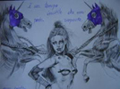
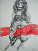
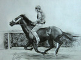
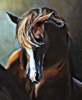
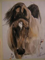

|
- CLAUDIA NEROZZI -
PITTRICE DEL PALIO DEL 2 LUGLIO 2013 |
|
 
 Claudia Nerozzi, nata a Siena il 5 marzo 1987 e diplomata all'Istituto d'Arte nel 2004, ha iniziato la carriera di pittrice esponendo con successo in vari paesi della provincia di Siena e Grosseto. Ha illustrato il libro di Janilla Bruckmann "dove nasce la verbena", edito nel 2004; ha quindi dipinto i drappelloni per il palio di Monticiano del 2005 e 2006 e quello per lo straordinario di Fucecchio del 2005. Sempre nel 2005 ha partecipato al concorso "139 idee per un Palio" indetto dal Comune di Siena. Ha eseguito disegni e vignette per "Numero Unico", pubblicato dalla contrada della Pantera a seguito della vittoria conseguita il 2 luglio 2006. Da segnalare pure alcune sue presenze nelle televisioni locali "Canale 3 Toscana" e "TV9" per svolgere disegni in diretta. Nel 2008 ha dipinto il drappellone per il Palio di Castiglion Fiorentino. Al centro delle sue opere i cavalli; ritratti o frutti della sua fantasia... reali o fantastici, ricoperti da un velo di mistero che fa emozionare.          |